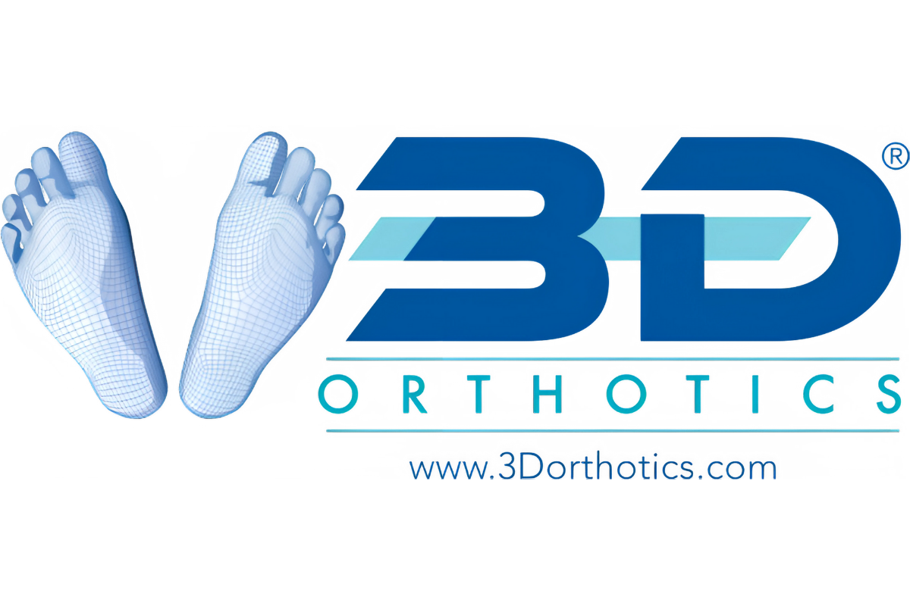
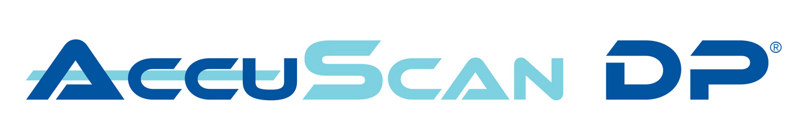

Casting
30-min plaster
→
30-min scan
Your staff powers on the iPad. That's it.

HIPAA-aligned digital orthotics for VA and DOD hospitals. Sub-five-minute scans with patient information de-identified before data leaves your facility.

From app launch to order submission: the entire workflow happens on one iPad.


Your staff focuses on patient care. We handle the coordination, complaints, and follow-up.
Your staff powers on the iPad. That's it.
We confirm the address and schedule delivery directly with the patient.
Every adjustment, concern, or question comes to 3DO — not your clinic.
We check in after delivery. Most issues resolve without a return visit.
Four tasks. One handoff. Hours of clinic time back to patient care.
Traditional cast molding is time-consuming and messy. Digital scanning was faster, but federal healthcare systems couldn't transmit Protected Health Information (PHI) without violating HIPAA.
Our system de-identifies patient information before any digital transmission: a HIPAA-aligned digitally scanned orthotic program for VA and DOD hospitals.
Learn MoreThree steps. Five minutes. Complete compliance.
Using our iPad and precision 3D scanner, a complete digital scan of the patient's foot is captured in under five minutes. No plaster, no foam boxes, no mess.
Patient information is de-identified automatically before any digital transmission. AccuScan DP is HIPAA-aligned and built for federal care.
Scan data is transmitted to our lab where custom orthotics are fabricated to exact patient specifications. Delivered with free shipping directly to the facility.
From patient positioning to completed scan order.
See exactly how AccuScan DP fits into your clinical workflow.


Founded as a Service-Disabled Veteran-Owned Small Business, 3D Orthotics was built by people who understand the unique needs of those who served. Our AccuScan DP program was developed specifically to overcome the barriers federal healthcare systems faced with digital orthotic scanning.
With over 50 years of combined experience in durable medical equipment, surgical implants, and medical device distribution, our team brings the expertise and the dedication veterans deserve.
Quote pending from a lead podiatrist at a VA medical center. Example angle: workflow speed, chair-time reduction, patient experience during scanning.
Quote pending from a facility administrator or purchaser. Example angle: compliance-readiness, SAM/SDVOSB procurement ease, contract onboarding experience.
Quote pending from a clinical staff member (MA, technician). Example angle: ease of use, training experience, day-to-day scanner handling and disinfection.
AccuScan DP was named Most Improved Product by the VA Podiatry Nationally, validating our commitment to advancing orthotic care for veterans across the country.